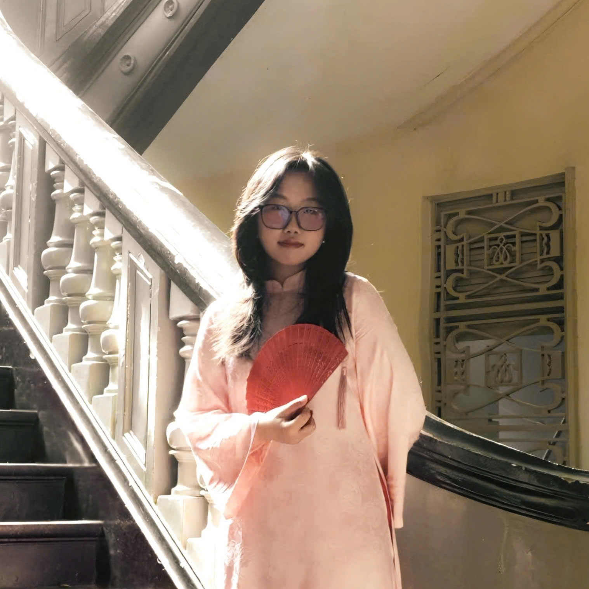

The People
Built by Six.
Built by Six.
For Mix-and-Match Website.
A rare combination of agricultural knowledge, material science, fashion design, technology, and brand storytelling — all under one mission.

HOÀNG NGUYỆT ANH
Project Leader
CHƯA BỊA ĐƯỢC, HÉLP!
TRẦN MAI CHI
Strategic Planner
Strategy, stakeholder relations, brand storytelling. Deep understanding of Vietnam's agricultural landscape.
HUỲNH THỊ HẠNH DUNG
Visual Lead
Product aesthetics, lookbook, brand identity. Proven track record in Vietnamese fashion & craft.
HỒ LÊ BẢO HÂN
Technical Lead
Mix-and-match platform development, UI/UX design, web tracing system, e-commerce infrastructure.

THÁI PHƯƠNG NGÂN
Marketing Lead
Content strategy, community building, influencer partnerships. Facebook-native storyteller.
NGUYỄN ĐÌNH HẢI
Content Creator
Creative content development, social media management, and brand narrative crafting.